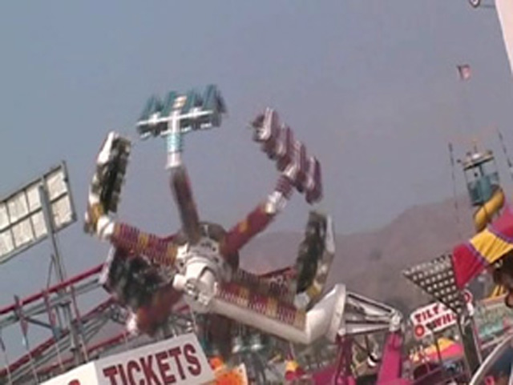
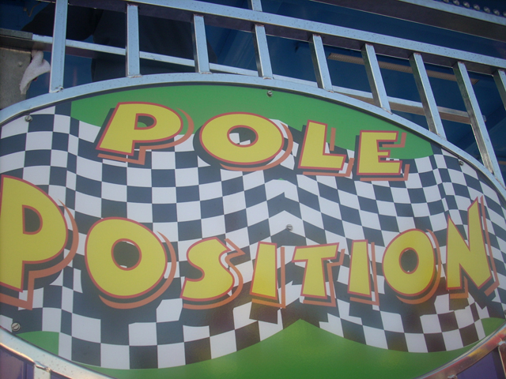
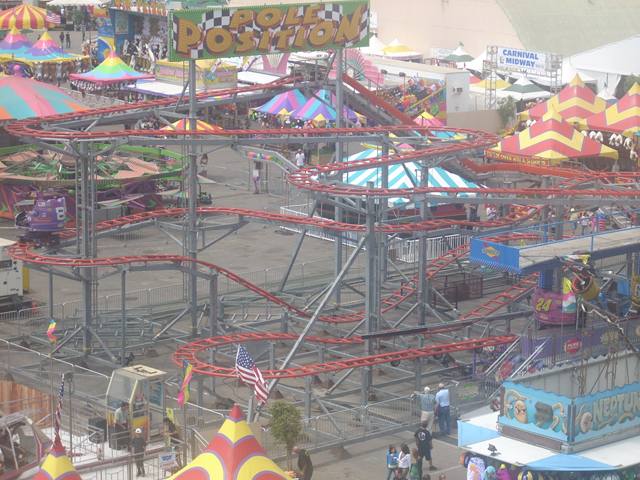
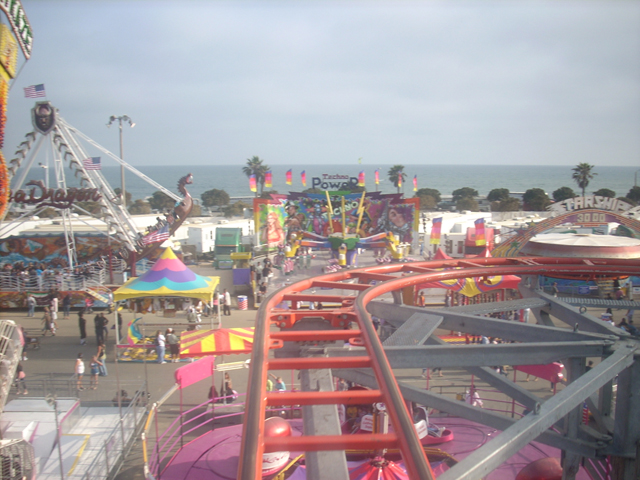
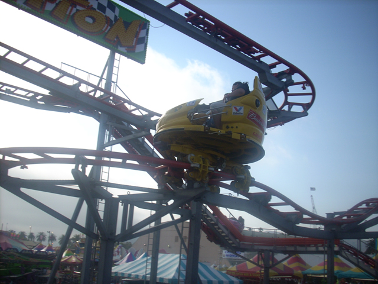
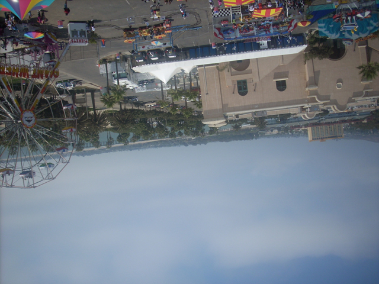
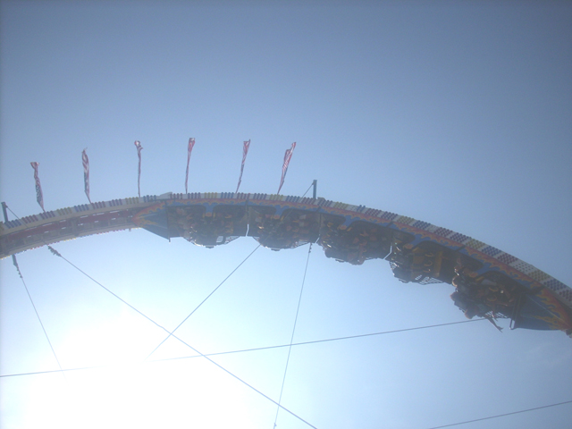
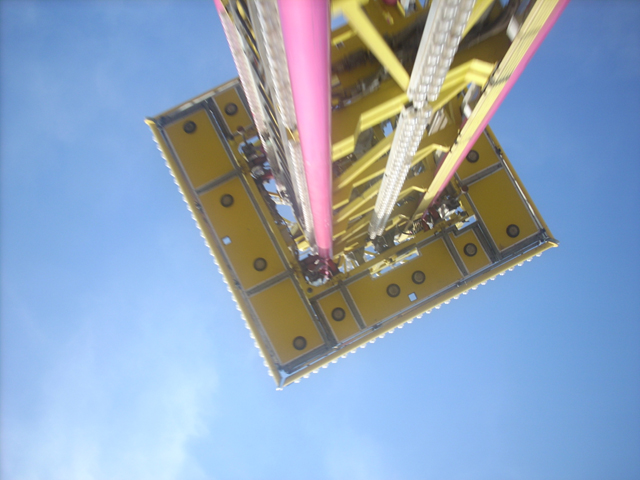

Ventura County Fair 2007
The fair has come once again and once again, They forgot the freaking Zipper!!!!! But we still had fun.
While they forgot the god damn Zipper again, They did improve the fair because its not as bad as it was last year.
By State Law, All Updates must now be started by blowing huge bubbles.
Now that we got the bubbles out of the way, Its time to talk about one of the improvements to the fair. Hard Rock.
This son of a bitch is just plain awsome.

This disgustingly insane ride also showed up! Spin Out is Awsome!!!!
OH MY GOD!!! I CAN'T EVEN RIDE STARSHIP 3000 WITHOUT MY SHOE HAUNTING ME!!!!!!!!!!!
 Windsurf also got improved since last year.
Windsurf also got improved since last year.
Windsurf is ofically No longer Dan Friendly.
"Is this an acceptable amount of wetness?"
Oh Boy! One of the fairs best rides.
Oh Crap! This looks like trouble.
Determined to do something stupid, Cody risked his life and lost his money to go Bungee Jumping.
Meh, Its just like doing Illegal Dives at the sh*tty local pool. Exept its higher, looks like I'm going to die and legal.
Who cares if the blood rushes to my head. I'm already too stupid to get any stupider.
Welcome to Fantasy Island where all your Fantasys will come true. Then why are you midgets?
 BULLS**T!!!!!!!!!!
BULLS**T!!!!!!!!!!
The Ferris Wheel gets smaller every year.
 Heres the view of it 2 years ago from the bottom.
Heres the view of it 2 years ago from the bottom.
Heres the view of it this year from the top.

Up next, The Official Spinning Coaster of Crapiness.

Hell just compare this to Sierra Sidewinder!!!!

Whenever it starts to spin, It gets trimmed to death.

This is basically the Mean Streak of Fair Coasters.
 E-STOP!!!!!
E-STOP!!!!!
Up next, The ride that looks like a Pirate Ship.
In case you can't tell, I was indeed upsidedown when I took this picture.

From the top of Kamakazie, You can really get an idea of how small the Giant Wheel is.
 This is Techno Power, Or translated in General Public Speak, "Scrambler on Steroids."
This is Techno Power, Or translated in General Public Speak, "Scrambler on Steroids."
Xtreme swings really high."
It's just as Nautious as Wicked Twister.
Its not quite as good as MaXair, But its still awsome.
You can be stupid just about anywhere.
It's practically impossible to get a flip on Magnum.

Theres the evil one who replaced Zipper.
With Zipper here, This fair would be perfect. (Strike that back, Oktoberfest is the perfect fair.)
This ride sucks so much that Codys not going to sleep tonight.
You don't need a bible to enjoy these Chairswings. Stop being such a Ned Flanders!!!
This is what an backseat onride shot of Tatsu would pretty much look like.
Do I even need to say it?
Cody does his Andrew Impression.
 Right before we left, Mega Drop opened.
Right before we left, Mega Drop opened.
 I may not have a life, But at least I have feet.
I may not have a life, But at least I have feet.

A shot of Mega Drop after it dropped.
I can't get enough of Mega Drop.
"This sucks after Bungee Jumping."
Home